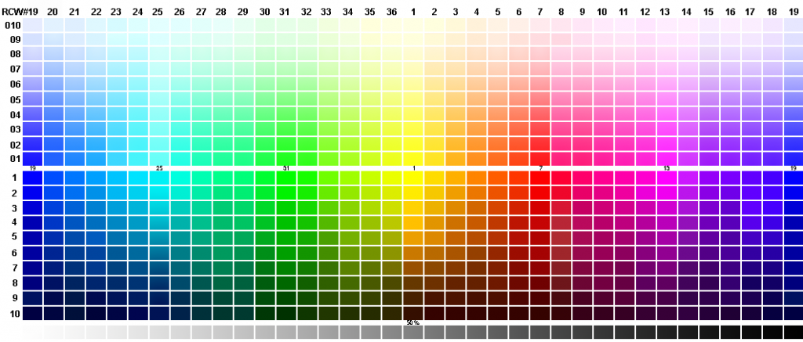

如何生成一個覆蓋廣的色板
用途
在主題色提取的過程中，要把顏色加入搜索引擎。但是如果是真彩色任意值加進去的話，對於搜索的時候來說無疑是一個複雜的操作。搜索條件要各種計算距離什麼的。
於是一個妥協的做法就是提供一套調色板，保證所有顏色都被吸納到調色板中的某一色值當中。
那麼這個時候調色板的覆蓋率以及距離什麼的就比較重要了。本文就講如何生成一套看起來還不錯的自用“標準色板”。
Windows 色板
一開始我用了一套 256 色的色板，不知道哪裏搞來的 Windows 色板。
由於顏色太多，不好貼代碼，我就直接把鏈接貼過來了：
這一套色板大致的效果如下：
生成更好的色板
我指的更好並不一定真的比之前找到的 256 色要好，畢竟上面那個是人家智慧和勞動的結晶。我指的更好是顏色更多，但是偏差又不會太大。
理論上我們能按照那種規則生成比真彩色少的任意種數的色板。
相關的色彩模式
這裏有必要重新普及下 N 多種色彩模式中的其中兩種，也就是我們今天生成一個色板所用到的兩種模式。
RGB 色彩模式
這個大家都已經耳熟能詳了，無非是 RGB 通道中的分量結合起來生成的一種顏色。
RGB 色彩模式是工業界的一種顏色標準，是通過對紅 (R)、綠 (G)、藍 (B)三個顏色通道的變化以及它們相互之間的疊加來得到各式各樣的顏色的，RGB 即是代表紅、綠、藍三個通道的顏色，這個標準幾乎包括了人類視力所能感知的所有顏色，是目前運用最廣的顏色系統之一。
使用 RGB 模型爲圖像中每一個像素的 RGB 分量分配一個 0 ~ 255 範圍內的強度值。RGB 圖像只使用三種顏色，就可以使它們按照不同的比例混合，在屏幕上呈現 16777216 (
256 * 256 * 256) 種顏色。
HSL 色彩模式
HSL 色彩模式是工業界的一種顏色標準，是通過對色相 (H)、飽和度 (S)、明度 (L) 三個顏色通道的變化以及它們相互之間的疊加來得到各式各樣的顏色的，HSL 即是代表色相，飽和度，明度三個通道的顏色，這個標準幾乎包括了人類視力所能感知的所有顏色，是目前運用最廣的顏色系統之一。
HSL 色彩模式就是今天的主角了。我們將會用 HSL 生成一張類似下圖的色板，而色板的粒度將會與你決定色板的顏色數量相關：

代碼實現
爲了簡化代碼，我們暫時不考慮飽和度，也就是說所有顏色讓它飽和度都爲 100%。
而且實際上色相是在一個圓裏面的 0° ~ 360°，那麼也就是說我們只需要做兩步就是了：
- 色相 0° ~ 360° 循環；
- 以及明度 0% ~ 100% 循環。
在這裏我定了一個步長：色相以 10° 爲一個步長，明度以 5% 爲一個步長。並且剔除 RGB 相等的黑白灰色。
當然這裏步長完全可以按照自己的喜好來。
我們以前端的 Javascript 爲例，能想到下面的一段代碼：
1 | var count = 0; |
這裏需要注意的是，實際上我明度的步長是 (100 / 22)。然後 0 和 100 這兩個明度我們另外拎出來，所以只取了 1 ~ 21 的明度。
剩下的就是跟剛纔說的一樣，各色相的各明度生成一個 HSL 顏色賦值給 background-color。
接下去我們生成一個灰色條的色板，專治灰黑白。這個時候實際上我們可以直接用 RGB 搞定：
1 | $("#palette").append("<br />"); |
最後把顏色輸出到一個數組就好了。
這裏有一點 happy 的是，就算你是用 HSL 來搞的背景色，用 jQuery 的
$(foo).css("background-color")獲取到的仍然是 RGB 值。
1 | var colors = []; |
所以最後我們還需要初始的 HTML 了：
1 | <textarea></textarea> |
效果的話這裏能看到：
小結
用 HSL 生成的色彩空間（色板）一個是表現力好，相對於 RGB 來說，好像更好知道如何去生成分部比較 OK 的一個色彩空間。
但是也有一個缺點，當我們不去管飽和度的時候，實際上我們還是丟失了一部分的顏色。好在本身我們生成色板也只是爲了合併顏色，可以通過 k-D 樹來快速尋找某個顏色在色板中是屬於哪種色塊的。當然，目前我們就是這麼做的。